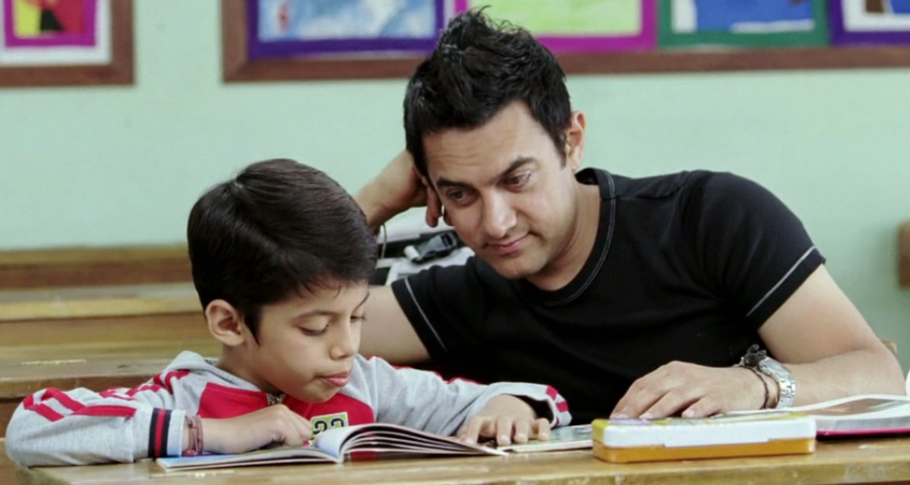

Listen and understand
Make time to hear children's concerns, recognise their feelings and respond to their needs in an age-appropriate way.
Positive parenting is an approach that combines warmth, communication, encouragement and clear boundaries to support children's development.
Instead of relying on fear or humiliation, it focuses on teaching children what they can do differently while helping them feel respected and supported.
Discover the principles
Understanding a child is the beginning of meaningful guidance.
Positive parenting is neither permissive parenting nor the absence of discipline. It encourages adults to set reasonable expectations while responding to children with patience and respect.
Make time to hear children's concerns, recognise their feelings and respond to their needs in an age-appropriate way.
Explain expectations, correct behaviour respectfully and help children understand the consequences of their actions.
Recognise that children are still developing skills and may need practice, encouragement and repeated guidance.
These everyday practices can help caregivers create a more supportive and predictable environment for children.
Help children understand that they are valued even when they make mistakes. Correct the behaviour without attacking the child's worth or identity.
Listen carefully, ask gentle questions and explain decisions in language the child can understand. Give them opportunities to express their point of view.
Set realistic rules and explain why they matter. Follow through calmly and consistently rather than changing expectations unpredictably.
Notice effort, progress, kindness and responsibility. Avoid making a child's value depend on marks, competition or comparison with siblings and classmates.
Help children name their feelings and practise healthy ways to respond to frustration. When adults make mistakes, they can acknowledge them and work to repair the relationship.
The goal is not to remove every challenge from a child's life. It is to help them face challenges with guidance and support.
Such responses can make open communication more difficult and may add to a child's distress.
Supportive responses encourage children to discuss problems, understand expectations and practise better choices.